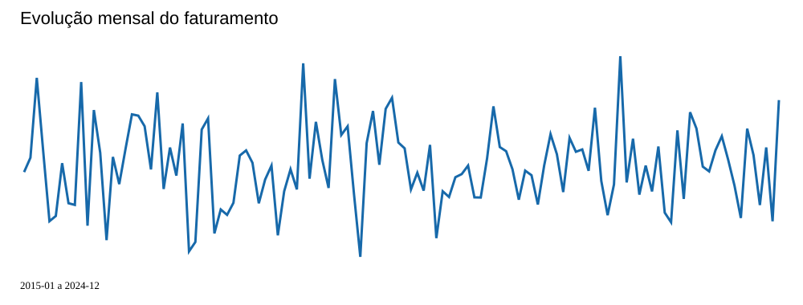
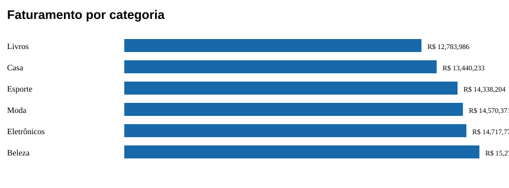

R$ 85.128.670,31
Visão geral
Base com 4,440 registros entre 2015-01 a 2024-12. Os indicadores abaixo são agregações do CSV e descrevem o conjunto completo.
R$ 26.886.927,79
31.6%
8.5 dias · 3.77/5
Comparações
Maior faturamento por região: Sudeste; por estado: RJ; categoria: Beleza; canal: Marketplace. Pico mensal agregado: 11/2022.


Explore o repositório GitHub do projeto e execute `streamlit run app.py` para abrir o painel interativo. O notebook contém o método, gráficos e verificações de consistência.
Limites
Uma linha representa um registro, sem identificador de venda ou dados de clientes. A associação entre variáveis é descritiva e não demonstra causalidade. O lucro informado foi mantido como está no arquivo de origem.